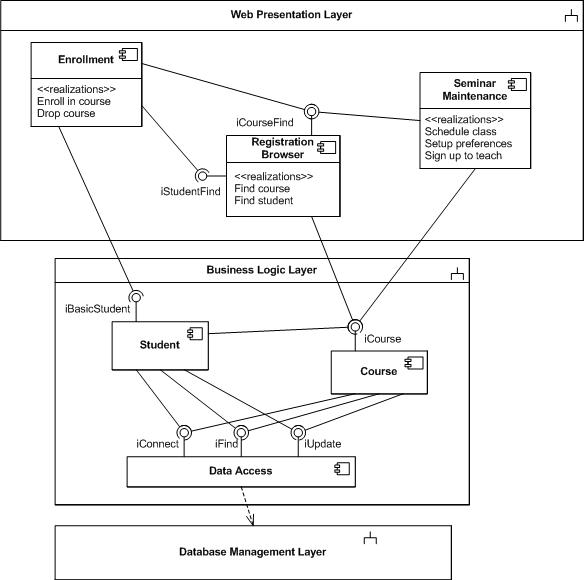
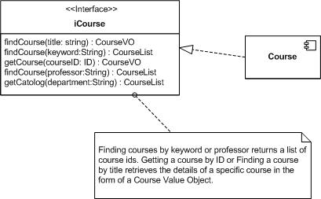
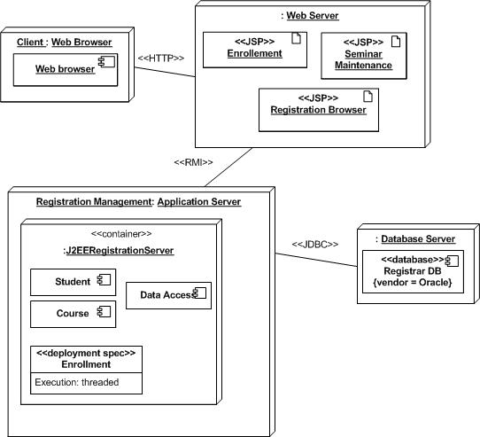

OUM |
Task Overview |
||
Method Navigation |
Current Page Navigation |
||
|
|
||||||||
The purpose of this task is to update the system’s architecture to add design related details that establish a set of components to be designed, the structure of those components within the system at runtime, and priorities for proceeding with detailing the design of the identified components.
Begin by adding design-level details to the Architecture Description (created using task RD.130). These details take the form of:
In a commercial off-the-shelf (COTS) application implementation employing a requirements-driven approach, the depth to which this task is performed typically depends on the extent to which the inclusion of a significant custom component (e.g., Data Warehouse), large numbers of custom extensions or integration with multiple COTS or third-party systems leveraging Fusion Middleware, requires a reassessment of the standard application architecture. When this sort of architecturally-significant custom development impacts the standard application architecture, it is extremely important that this task be performed to guide the development and integration of custom components.
This task is not normally performed in a commercial-off-the-shelf (COTS) application implementation employing a solution-driven approach that seeks to minimize custom extensions by promoting leading practice use of standard functionality. Therefore, this task is not included in the pre-defined Solution-Driven Application Implementation View Work Breakdown Structure (WBS). However, if your solution-driven application implementation includes architecturally-significant custom extensions, you should include this task in your project.
The Architecture Description work product is the collection point for all of the architectural views for the system. This artifact documents the system’s architecture through these architectural views and highlights the architecturally-significant aspects of the system by documenting the design and development priorities that have been determined by an iterative examination of the implementation risks. A well-formulated Architecture Description is one of the key elements of the Lifecycle Architecture Milestone that concludes the Elaboration phase.
The Architecture Description becomes the index for:
This task is typically utilized on larger projects, but should also be considered when:
B.ACT.BSA Baseline Software Architecture
C.ACT.DC Design - Construction
Architecture Description
The work product provides a complete description of the system's architecture. It is a composite work product that is refined across these four tasks:
In this task, you add Design Architecture Description (DS.040) material to the work product. The Design Architecture Description further details the work product with the Design Priorities, the Module View, and the Execution View.
You should follow these steps:
No. |
Task Step | Component | Component Description |
|---|---|---|---|
1 |
Identify Design Priorities. | Design Priorities | Design Priorities provide guidance to the design team, helping them make the right choice among all the possible design choices for developing the system solution. |
2 |
Define Module View. | Module View | The Module View depicts how subsystems are decomposed into components, and components are assigned to layers in accordance with their use-dependencies. |
3 |
Define Execution View. | Execution View | The Execution View describes the structure of the system in terms of runtime platform elements. |
4 |
Review Architecture Description. | Architecture Defects / Change Requests | The Architecture Defects/Change Requests is a list of defects found in the Design Architecture Description. |
The Conceptual View of the architecture organized analysis or use case packages for the purpose of grouping related functionality together which will subsequently be developed into a design solution. During Design, these packages are “broken up” into smaller, more manageable pieces. Each of these pieces should lend themselves more easily to a solution. Once each of the pieces are designed, they work together to form a solution to the original problem.
The Module View consists of units of software that can be designed, coded, and delivered in an executable environment. These components organize all the elements from analysis and other design elements into a structure that matches the quality needs of the system. The Executable View shows the runtime instantiation of the components. While the Module View describes what the software elements are and their dependencies, the Execution View describes the environment in which those software elements run.
The task of architecture design is accomplished iteratively. Standard architecture practice takes different perspectives or views of the problem. Each view focuses on a small set of issues before moving on to other concerns. Because of these different perspectives, it is important to use an iterative process. What’s learned from working on one view provides insight into another view. Do not try to develop a Module View in its entirety and then move on to the Execution View. Instead, develop a “tentative” Module View, then a “tentative” Execution View. Go back to the Module View and refine issues about the overall structure of the design.
There are many possible design solutions for a system. Which design choices will meet the needs of the architecture? How will you know which design choice is best? What criteria should be used to find the right solution? This step will answer these questions.
First understand the relative importance of issues like performance, cost, schedule, meeting the functional requirements, and quality of service to the stakeholders. A design that favors performance over everything else is usually more costly, takes longer to implement, and often sacrifices such things as flexibility, modularity, and maintainability. An architecture that is cheap to build may sacrifice user requested functions or use cases.
Next, prioritize the capabilities that the system must have. Are some use cases more important than others? Are there special conditions under which the system must operate without fail? Look carefully at the supplemental requirements such as reliability, availability, scalability, and maintainability. How important are each one of these in terms of the quality of service your system provides? What are the system’s operational scenarios under which these quality of service items may become very important? For example, during peak work week hours the system must be available 99.9999% of the time, but on weekends there is no need for general user availability.
Finally, write down your design guidelines. As you go through the design process, the team has criteria to assess whether any particular design decision is better than another.
In this step, the Analysis Architecture is enriched with the Module View.
In the Module View, the analysis packages are decomposed into modules or components, and these components are assigned to layers in accordance with their use-dependencies. Component dependencies are explicitly modeled with the help of component interfaces. In the Module View, the analysis classes, and packages are mapped to components and layers. Here the architect addresses how the conceptual solution can be realized with today's software platforms and technologies. The primary concerns that must be addressed when defining the Module view are:
There are many possible architectures for a system. If you have not already done so, start by choosing an architecture pattern as the basis for your design. Most of today’s information systems are based on the three-tier architecture pattern: presentation, business logic, and data management. The presentation tier contains design elements that are responsible for interacting with the user. The business logic tier is responsible for performing calculations, verifying that business rules are followed, and that the right content is delivered to the presentation tier at the right time. The data management tier is responsible for storing all persistent data. Each element of an architecture pattern can be considered as a subsystem with specific relationships between those subsystems. In the three tier architecture mentioned above, the presentation tier is dependent on the business logic tier. The business logic tier is in turn dependent on the data management tier.
Given the chosen architecture pattern and its logical subsystems, you can now decompose those subsystems into subsystems or components. Those components may need to be decomposed into yet more detailed components. Generally, when you decompose subsystems into components, try to have high cohesion within the component and low coupling to other components. You can use one or more of the following techniques for grouping elements into Components:
As cohesive components are developed, assign responsibilities to them. If a component is going to realize a use case, then assign it the responsibilities of performing the scenarios in that use case. If a component is to implement an aggregation, then the Component should have the responsibilities of the class representing the whole aggregate.
Once a group of components is defined, consider the dependencies among the components. Can a component stand alone? Does one component need the data of another?
For example, an Enrollment Component would need information from a Component that encapsulates all things related to student.
Does a component need to make requests of another component?
For example, a Drop Course Component would invoke the Course Component requesting that a student be taken off the roster in a specific course being held at a certain time.
Show these dependencies in your Module View. If you are providing a diagram for the Module View you can use a dashed line with an arrow pointing in the direction of the dependency.
Once the components have been assigned responsibilities and dependencies, add provided interfaces to each component that provides behavior and/or data to other Components. The interfaces should bundle a group of related behavior that other components will need.
For example a Student Component might provide an iBasicStudent interface that has an operation allowing other Components to obtain basic student data such as name and major. Further the Student Component might provide an interface called iFullStudent that has an operation allowing other Components to get more sensitive data about a Student such as SSN.
With the provided interfaces specified you can proceed to the required interfaces. For each component that is dependent on another Component and thus requires some interface, document that fact. Now you can seen which components must be connected and, how due to the behaviors, provided by various components.
Once you have the basic layout for the components based on the use case and class, consider the analysis mechanisms that were specified as part of the Analysis Model. These mechanisms include persistence, inter-process communication, event handling, messaging, and error handling. Add to this list other design mechanisms such as signals, semaphores, mutex locks, RPC, security, transaction management, and other system services. As an Architect you must decide how the analysis mechanisms will be designed. You do not have to design the details of each mechanism but you will have to show the any components that will implement your choices.
For example, you may choose to have a Catch All Error Reporting Component that other Components use to report problems. You could decide to create a publish and subscribe Component to handle event notifications.
Getting your Module View correct may take several passes through the steps outlined above. Remember to use the design priorities from step one of this task to guide you during each iteration of the Module View development.
The following diagram is a sample of what a Module View might look like showing Components within layers and the provided / required interfaces for each Component:

For each component interface, document the operations that realize that interface. These interfaces can be documented using text and describing the signature of each operation for that interface. You can use a UML diagram to accomplish the same thing. The following is a diagram that shows the operations of an interface provided by the iCourse Component:

Notice in the above diagram, you can use notes attached to interfaces to describe the nature of the behavior that interface entails as well as any other details you need to communicate with the design team.
For SOA Implementations, in this step you gather all dependencies, including hosting system and policies in order to perform service boundary analysis in the next step.
The Execution View describes the structure of the system in terms of runtime platform elements and captures how the Module View will be assigned to these platform elements. An important part of the Execution View is the flow of control. The conceptual view describes the logical flow of control, but in the execution view interest lies in flow of control from the point of view of the runtime platform.
Start with the hardware platforms and their communication paths. Describe the hardware nodes and any of their capabilities that are important to the design. You can show this on a deployment diagram by using nodes for hardware platforms and connections for communication paths. Add stereotypes to the paths indicating what communication mechanism and/or protocol will be used to implement the communication between elements on the respective nodes. Add stereotypes to the nodes indicating the type of hardware platform the node represents.
Look to your Module View and decide which modules or components will be placed on which nodes. Place the component on the appropriate node. Indicate any runtime information that is necessary for the operation of that component on that node that is significant to your design. If multi processors is important to your design consider showing <<process>> nodes contained within <<device>> hardware nodes. Then place components on the different processor nodes to indicate how they run separately in different processes at runtime. Caution: do not try to show every process for your system. Only show those that are significant for your design.
The following diagram is a sample of what can be done using J2EE in the Execution View:

The Architecture Description is reviewed and defects and change requests are recorded. There are many different types of changes. During the review, take care to make sure all the elements of the Conceptual View are mapped to the Module View and that all the elements of the Module View are mapped to the Execution View. If there are missing mappings or a design concern has not been met, make changes to each of the views. Some changes can affect scope and require change requests. Other changes do not affect scope and should be handled through a MoSCoW List.
This task has supplemental guidance that should be considered if you are doing a SOA Project Delivery implementation. Use the following to access the task-specific supplemental guidance. To access all SOA Project Delivery supplemental information, use the OUM SOA Project Delivery Supplemental Guide.
This task involves the following method roles:
Role |
Responsibility |
% |
|---|---|---|
System Architect |
Lead the development of Module and Execution of Views and update the Architecture Description. Participate in the definition and review of the Module and Execution Views to gain an understanding of the application and its architecture. | 80 |
Developer |
Participate in definition and review of the Module and Execution Views. | 20 |
* Participation level not estimated.
You need the following for this task:
Prerequisite |
Usage |
|---|---|
Architecture Description |
The current state of the Architecture Description (originally created with RD.130) document that includes the Global Analysis, High-Level Software Architecture, and Conceptual View materials is used as a starting point to create the Module View. |
Reviewed Analysis Model (AN.110) |
The Analysis Model is comprised of all of the Analysis work products. The analysis classes and packages that are part of the Analysis Model are used as a basis to identify components, subsystems, and layers. The Analysis Model represents a collection of all Analysis work products, as available, resulting from the following tasks:
|
Prerequisite |
Usage |
|---|---|
Architecture Description |
The current version of the Architecture Description (originally created with RD.130) document that includes the initial Module and Execution Views and the latest updates to the Global Analysis, High-Level Software Architecture, and Conceptual View serves as input to the final version. |
Integration Architecture Strategy (TA.030) Initial Architecture and Application Mapping (TA.070) Backup and Recovery Strategy (TA.080) Security and Control Strategy (TA.090) Capacity Plan (TA.160) |
During the development of these Technical Architecture work products, new factors may have been identified that should be reflected in the Architecture Description. |
The following techniques are available to assist with this task:
Technique |
Comments |
|---|---|
Use this technique to understand where this task sits in the overall service lifecycle. |
|
Use this technique to understand how to use boundary analysis to define services to the right level of granularity. |
|
Use this technique to understand how to write a service contract. |
|
Use this technique to understand how you can model services. |
The following templates and tools are available to assist with this task:
Template File Name |
Comments |
|---|---|
Architecture Description |
MS WORD - Add the Design Priorities, the Module View, and the Execution View to the Architecture Description work product originally created in Develop Baseline Architecture Description (RD.130). |
The Module View and Execution View of the Architecture Description are used in the following ways:
Although it might seem desirable to strive to achieve the highest levels of precision and consistency for a standard such as an Architecture Description, it is not necessarily the case. To assist rapid development and provide a practical standard that can be readily adopted by a wide range of people in development projects, a high-level view is all that is needed.
One objective is to define an Architecture Description just to the point to enable consistent definition and use by practitioners and to underpin the architectural aspects of the project. Another, related objective is to provide a consistent base of concepts, terms, and notations for the architects to use as input into their design.
Such a specification does not have to be comprehensive to be effective. It only needs to cover the core areas of the architecture that must be defined and understood in a standard way to enable effective design.
Although underlying precision and consistency are important (and will be achieved through additional tasks), practicality and usability are paramount. The critical factor for success is whether the resulting set of concepts, terms, and notations is small, simple, and accessible enough to be understood.
Use the following criteria to check the quality of this work product:

Copyright © 2006, 2016, Oracle and/or its affiliates. All rights reserved.